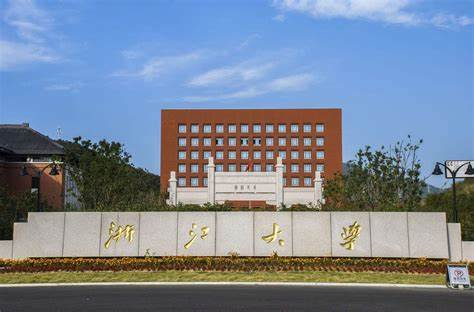
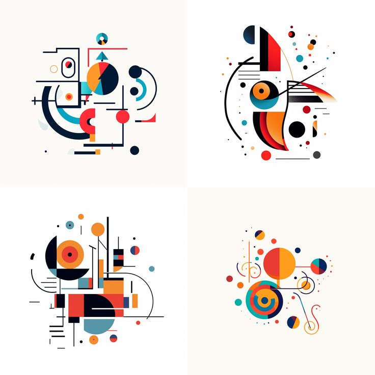
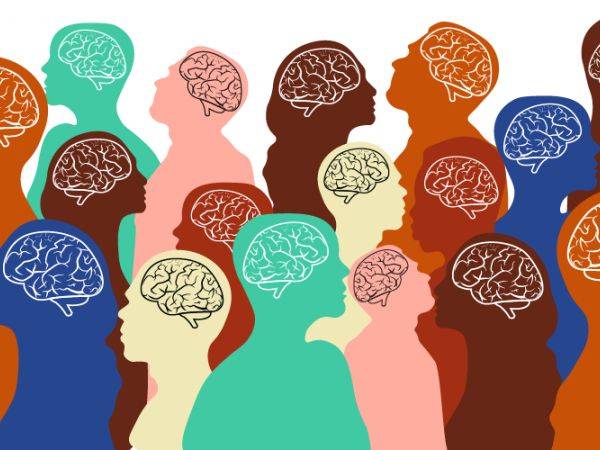
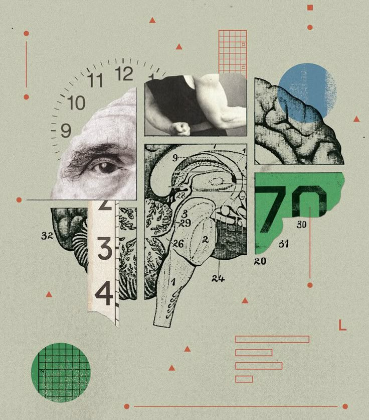
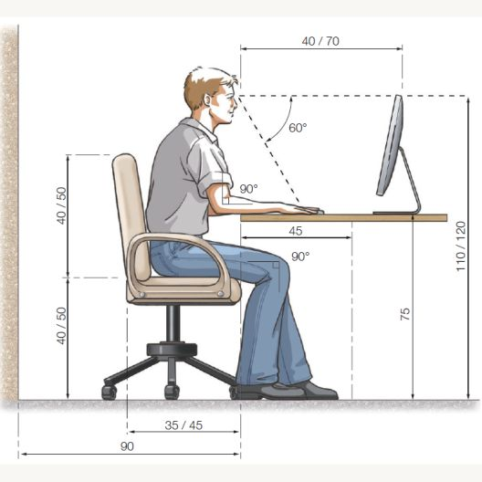
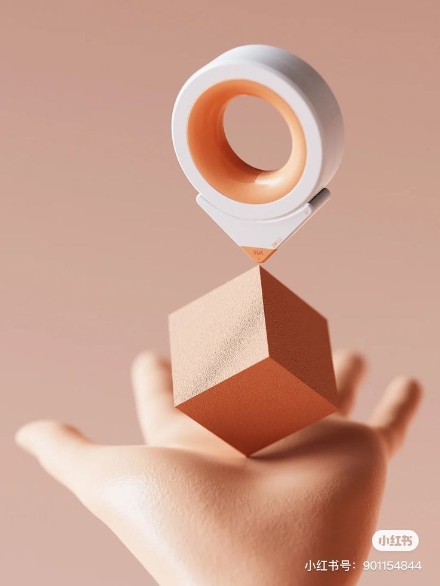
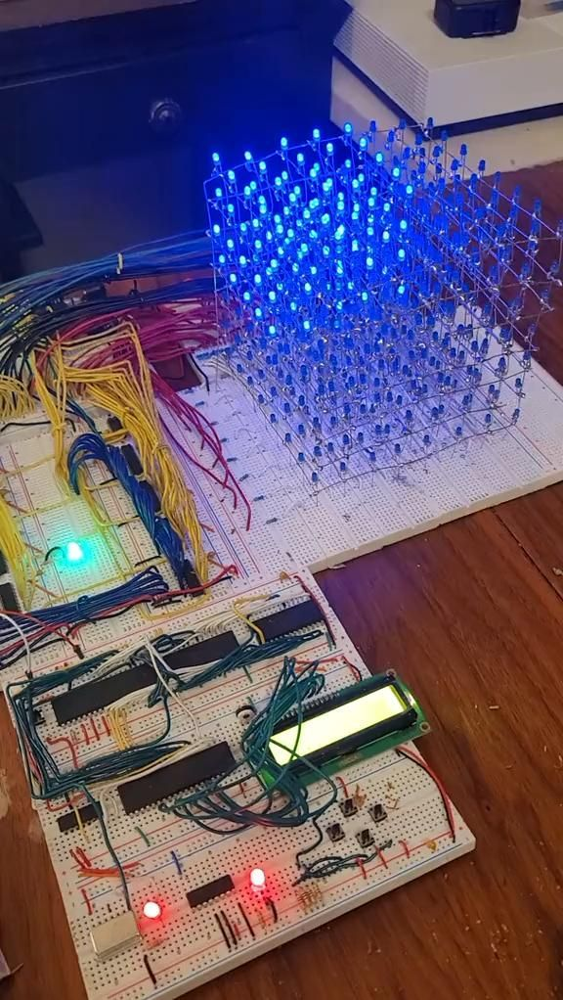
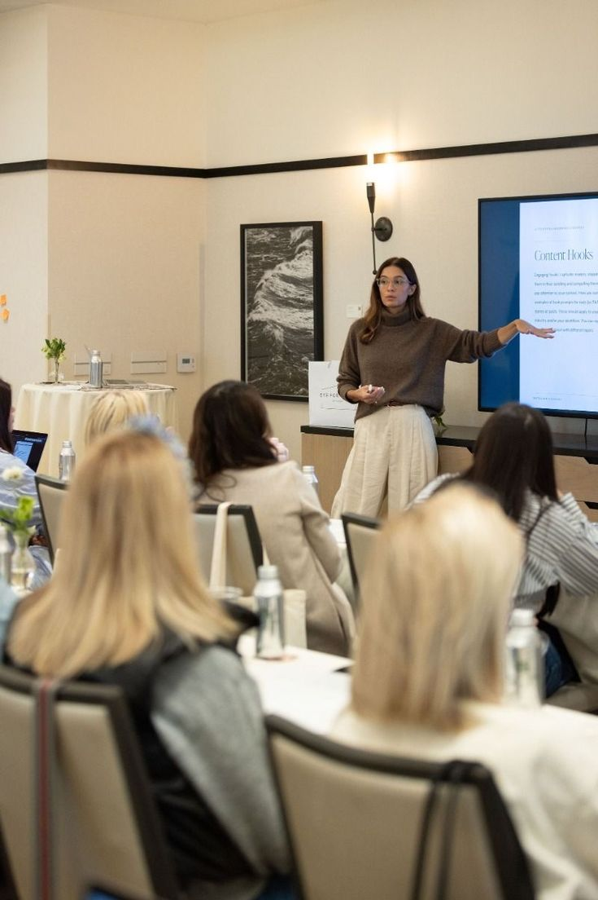
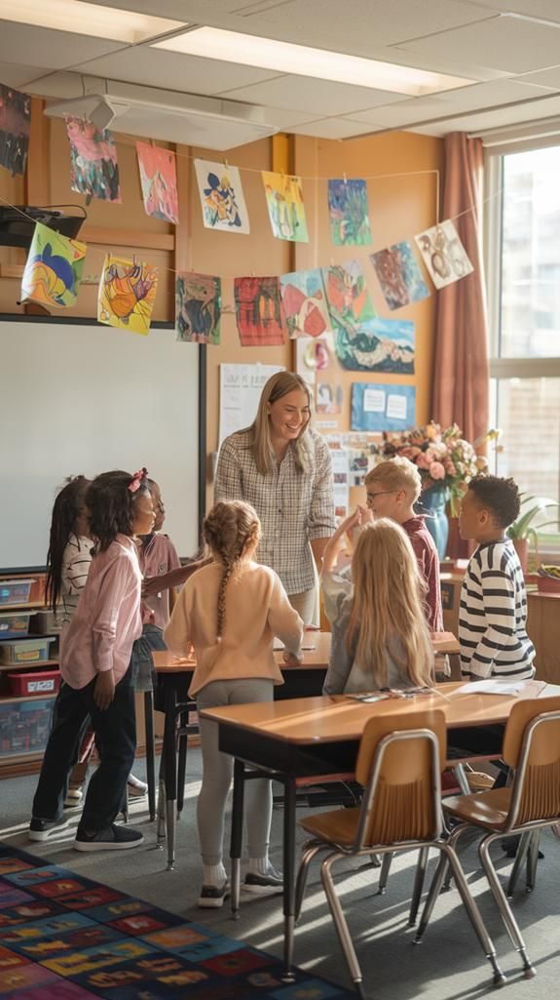

创新设计，智造未来
培养学生的基础造型能力和设计思维，包括素描、色彩、平面构成、立体构成等课程内容。

授课时间：大一上学期
课程学分：4学分
课程目标：通过手绘训练和设计实践，培养学生对形态、色彩、材质的感知能力和表现能力，建立设计的基础认知。
主要内容：
探讨人类心理与设计之间的关系，研究用户体验和行为模式。

授课时间：大二上学期
课程学分：3学分
课程目标：掌握设计心理学基本理论，培养以用户为中心的设计思维。
主要内容：
训练学生的创新思维能力，掌握设计表达技巧。

授课时间：大二下学期
课程学分：3学分
课程目标：通过项目驱动的方式，培养学生的设计思维和表达能力，掌握多种设计表现手段。
主要内容：
研究人-机-环境系统的协调关系，优化产品使用体验。

授课时间：大三上学期
课程学分：3学分
课程目标：理解人因工程学的基本原理，掌握影响人机交互的关键因素，能够进行简单的人机交互设计。
主要内容：
探索产品的形态语言和交互方式，创造创新性设计方案。

授课时间：大三下学期
课程学分：3学分
课程目标：掌握产品形态设计的基本方法，能够进行产品外观造型和交互方式的创新设计。
主要内容：
学习现代产品中的信息处理与交互技术。

授课时间：大四上学期
课程学分：3学分
课程目标：理解感知、通信与控制的基本概念，掌握智能产品设计中的信息处理与交互技术。
主要内容：
教授、博士生导师
"致力于产品创新设计理论与方法、用户体验设计、交互设计等领域的研究与教学。"

教授、博士生导师
"专注于工业设计方法论、智能产品设计、创新设计教育等研究方向。"

副教授、硕士生导师
"研究方向包括人机交互设计、用户研究方法、智能产品创新设计等。"